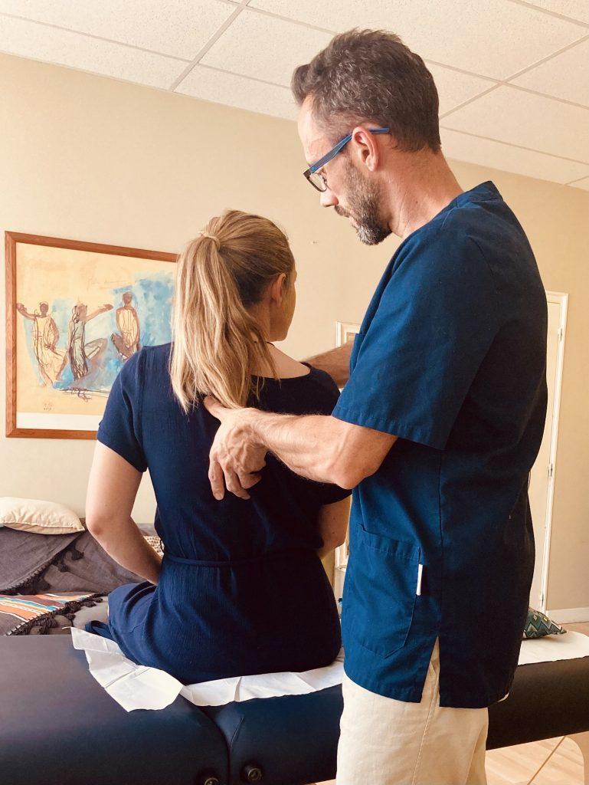

Elles vous limitent
Dans vos activités quotidiennes ou sportives.
Ostéopathe à Ferney-Voltaire
Thomas Garnier, ostéopathe D.O., vous reçoit pour une séance qui commence par un échange et un examen, puis un soin doux, adapté à votre situation.
Adultes, sportifs, femmes enceintes, nourrissons et seniors.
Le cabinet est à Ferney-Voltaire, au Pays de Gex, et reçoit aussi des patients venus de Genève.

Diplômé du Collège Ostéopathique Européen. Peu ou pas de manipulations forcées, et le temps d’expliquer ce que la douleur exprime.
Trois signes justifient un rendez-vous.
Dans vos activités quotidiennes ou sportives.
L’inquiétude est déjà un motif de consultation.
Elles durent dans le temps.
Durée d’une séance.
Honoraires d’une séance.
8 h 45 – 19 h 15.
Samedi, 8 h 45 – 13 h.
8 chemin des Mûriers. Parking du Bijou, à une minute. Bus Ferney Centre, à deux minutes.
Avant la séance : tenue, mutuelle, urgences · Adresse et plan
Thomas est d’un professionnalisme rare. Une réelle connaissance des mécanismes du corps alliée à une écoute sincère.